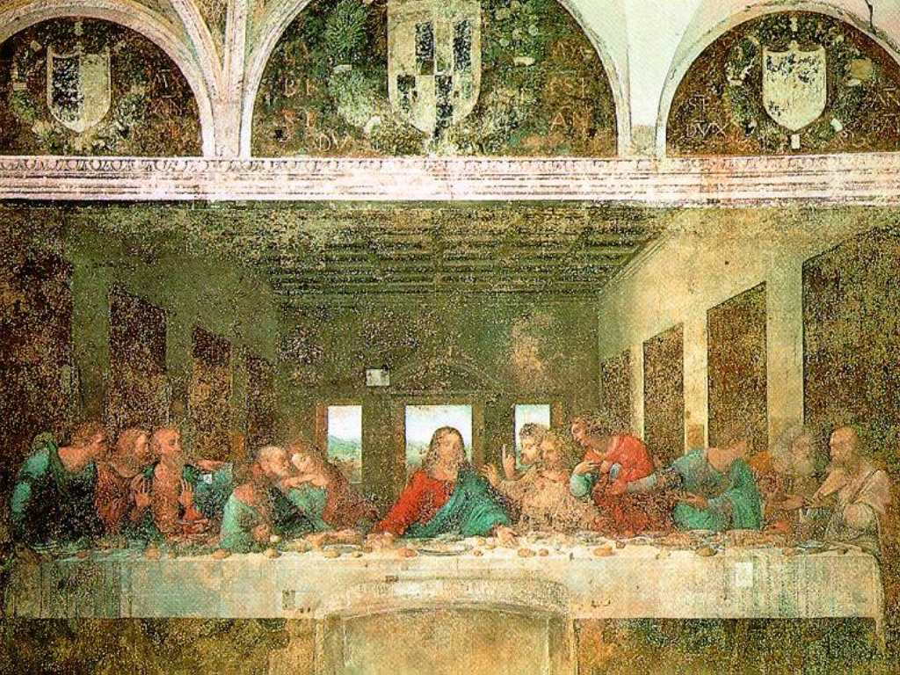
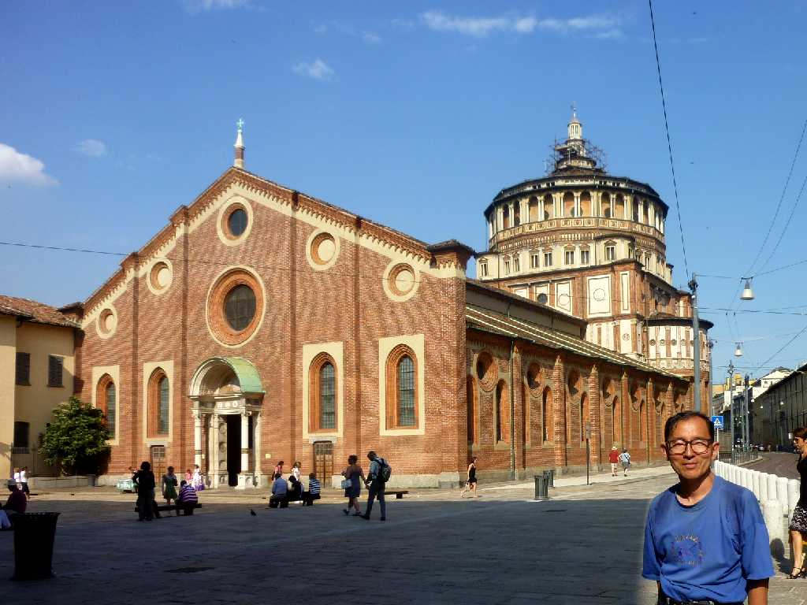

The Last Supper
レオナルドダヴィンチ４２歳から２年の歳月を費やして独りで１４９８年に完成した新約聖書の最後の晩餐でイエスが「汝たちの一人我を売らん」と言った瞬間を描いた 銀貨３０枚で売ったユダは思わず財布を握り締め驚き悲み怒り等人間の内面から出る感情をキリストと１２人の弟子で表現している この場面で我が体をパン我が血をワインとして弟子たちに恵みミサの起源となりキリストの教えが宗教となり西暦が始まり紀元前Ｂ.Ｃ.(Before Christ)紀元後Ａ.Ｄ.(Anno Domini)を分かつこととなった ヴィンチ村のレオナルドは晩年フランスに移り住んだがそのとき有名なモナリサ Monna Lisa を描いた

July 6 2011 Santa Maria delle Grazie